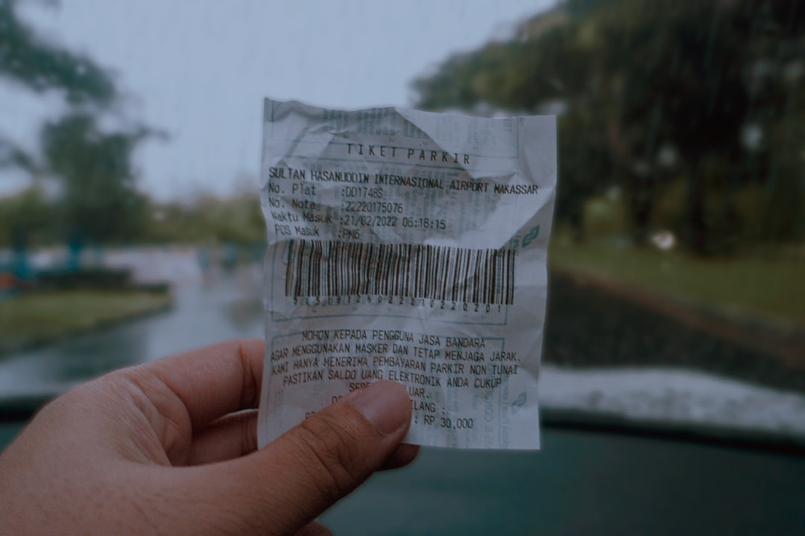

Understand before activating
What is cashback and how do you avoid mistakes that make you lose your earnings? answers a simple question: how to recover more without making the purchase more complicated. The idea is not to turn each order into obsessive hunting, but to adopt a profitable reflex before paying.
The good use of cashback is based on three points: quickly compare, read the important exclusions and activate only one offer at the right time. Many people lose earnings not because the system is difficult, but because they click too fast.
Over the course of a year, the difference between a person who compares before buying and another who never does so eventually becomes visible. The cashback is not spectacular on a single order, but it becomes interesting with repetition.
What really matters is not spectacular trick, but the repetition of a good reflex at the right time.
What to remember
To remain effective, it is better to use a short checklist. First check the actual amount at stake, then the time required to obtain it, then the ease of execution. If the effort is minimal and the output decent, it is often worth incorporating into your routine.
Finally, keep a simple logic: first protect your budget, then look for optimization. Good financial habits are rarely spectacular, but they give a much more lasting sense of control.
Useful reflexes
- Compare two or three offers before buying
- Read exclusions before clicking
- Enable a single platform at time of payment
- Avoid multiplying unnecessary manipulations
Frequently asked questions
Does this method work for everyone?
Yes, as long as you adapt it to your pace and your level of spending. The principle remains the same: seek low effort for lasting gain.
How much can we really hope for?
It depends on the budget, the habits and the time you are willing to spend. The important thing is to aim for a credible and repeatable gain rather than an impressive but fragile figure.
Where to start today?
Start with the simplest action to activate in less than ten minutes. A small concrete victory is better than a grand plan that remains theoretical.
Ready to get money back on your purchases?
Sign up for iGraal, the leading cashback platform in France, and receive a welcome bonus. Thousands of partner shops are waiting for you.
👉 I register on iGraal and start saving